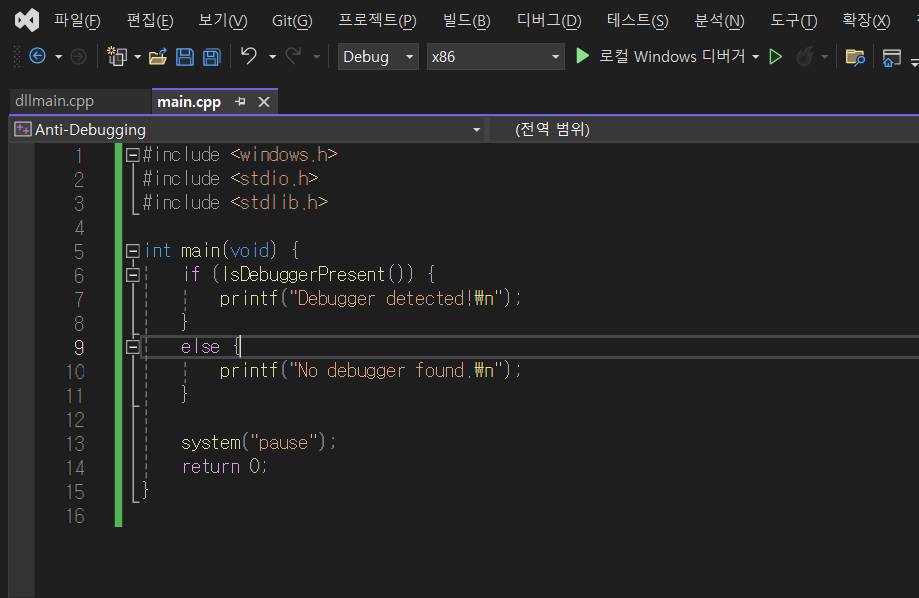
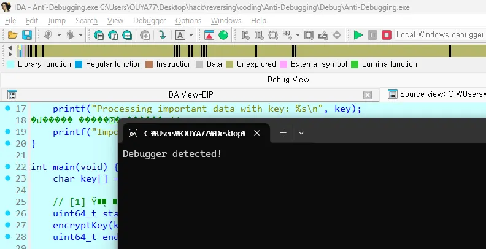
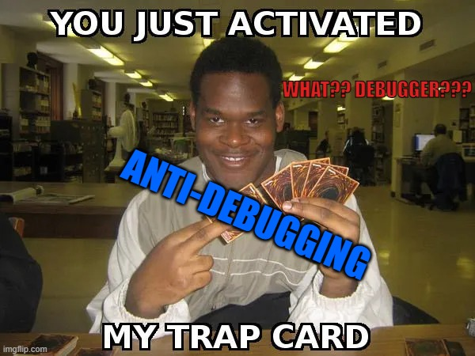

[Research] Anti-Debugging Part 2(EN)
Hello, this is OUYA77. 🙂
Last time, we explored:
- Debugging: The process of identifying problematic areas in code, narrowing down the scope, analyzing the cause, and resolving issues.
- Anti-debugging: Techniques used to detect or disrupt debuggers to protect software from reverse engineering and analysis.
If you haven’t checked it out yet, here’s the link! 👇 😆
Previous Part: Anti-Debugging Part 1 (EN)
In our discussion on anti-debugging techniques, we covered two main categories: Static and Dynamic methods. Static anti-debugging techniques rely on system information or APIs to check if a debugger is attached. For example, in Windows, the IsDebuggerPresent() function can be used to detect a debugger. Dynamic techniques, on the other hand, detect debugging through behavioral patterns during program execution, such as timing-based anti-debugging.
Bypassing Anti-Debugging Techniques
Bypassing Static Anti-Debugging
Static techniques are relatively simple to implement but can also be bypassed with ease. Here are some common methods to circumvent them:
- API Hooking: By hooking API functions used for debugger detection, we can intercept and modify their behavior. For instance, in Windows, hooking
IsDebuggerPresent()to always return false can effectively hide the debugger. - Manipulating the PEB Structure: The
BeingDebuggedflag in the Process Environment Block (PEB) can be directly modified to conceal the presence of a debugger.
Bypassing Dynamic Anti-Debugging
Dynamic techniques rely on runtime environmental changes and conditions, so bypassing them requires a deep understanding of the program’s execution flow. Here are some common bypassing methods:
- Timing-based Evasion: Timing-based anti-debugging detects debuggers by measuring execution speed. To bypass this, tools like IDA can be used to patch the code and modify timing checks.
- Exception Handling Manipulation: Some dynamic techniques detect debuggers by triggering and monitoring exceptions. To evade this, exception-handling routines can be altered to prevent debugger detection.
Hands-on Practice
Now, let’s dive into a hands-on exercise.
Environment Setup
- OS: Windows 11
- Binary Architecture: 32-bit
- Debugging Tool: IDA Freeware 8.4
- IDE: Visual Studio 2022
In this setup, we will build a 32-bit binary and use IDA Freeware to debug a binary with anti-debugging techniques applied.
Static Anti-Debugging Bypass Practice
1. Basic Program
As demonstrated in “Part 1,” let’s create a simple program with anti-debugging measures.
Open Visual Studio 2022, create an empty project, add a main.cpp file, and build it as an x86 binary.

// main.cpp
#include <windows.h>
#include <stdio.h>
#include <stdlib.h>
int main(void) {
if (IsDebuggerPresent()) {
printf("Debugger detected!\n");
}
else {
printf("No debugger found.\n");
}
system("pause");
return 0;
}
After building the executable, navigate to the ./Debug folder and run the compiled binary. You should see the message: No debugger found.

Now, let’s try debugging this program using IDA Freeware. Load the binary into IDA, press F9 to start debugging, and…!!

As seen above, the program detects the debugger using the IsDebuggerPresent() function and displays a detection message.
This binary employs IsDebuggerPresent() to check for a debugger. But what if this function is disabled or modified? Let’s bypass Static Anti-Debugging using API Hooking.
2. API Hooking Practice (Bypassing Static Anti-Debugging)
We will use the Microsoft Detours library to perform API Hooking. This library allows us to intercept API calls and modify their behavior to prevent debugger detection.
- Download the compressed file from Microsoft Detours git, extract it to a preferred folder.

Open Visual Studio 2022 and launch the terminal.

Run
nmaketo build the source code. This will generate thebin,include, andlibdirectories.

In Visual Studio, go to Project > Properties, set Configuration to All Configurations, and Platform to Win32.

Add the Detours library to Visual Studio.
C/C++ Properties: Adding Include Directory
- Open Project Properties and select C/C++.
- Navigate to General > Additional Include Directories.
Add the installation path for Detours:
C:\Users\OUYA77\Desktop\Detours-main\includeClick OK to save changes.
Linker Properties: Adding Library Directory
- In Project Properties, go to Linker.
- Navigate to General > Additional Library Directories.
Add the installation path for Detours:
C:\Users\OUYA77\Desktop\Detours-main\libClick OK to save changes.
If your environment is ready, create dllmain.cpp to begin API Hooking! 🚀
// dllmain.cpp
#pragma comment(lib, "detours.lib")Now, actually bypass Static Anti-Debugging by hooking the IsDebuggerPresent() function using Detours.
// main.cpp
#include <windows.h>
#include <stdio.h>
#include <stdlib.h>
#include <detours.h>
// Function to hook IsDebuggerPresent()
BOOL WINAPI HookedIsDebuggerPresent() {
return FALSE; // Always return that no debugger is present
}
int main(void) {
// Hook IsDebuggerPresent()
HMODULE hKernel32 = GetModuleHandleA("kernel32.dll");
if (hKernel32) {
FARPROC pIsDebuggerPresent = GetProcAddress(hKernel32, "IsDebuggerPresent");
if (pIsDebuggerPresent) {
// Hooking using the Detours library
DetourTransactionBegin();
DetourUpdateThread(GetCurrentThread());
DetourAttach(&(PVOID&)pIsDebuggerPresent, HookedIsDebuggerPresent);
DetourTransactionCommit();
}
}
// Test
if (IsDebuggerPresent()) {
printf("Debugger detected!\n");
}
else {
printf("No debugger found.\n");
}
system("pause");
return 0;
}
Build the above source code and conduct the same test as before.

Naturally, when executed locally without a debugger attached, it prints No debugger found. Now, what happens if we attach a debugger to the binary using IDA?

OUYA…(It is interjection, means Oh wow…, Oh my God..) Even while debugging in IDA, it still executes as if no debugger is present.

This demonstrates how easily Static Anti-Debugging can be bypassed through API hooking.
Since Static Anti-Debugging techniques rely on various system information, they can be bypassed by:
- Hooking functions commonly used for anti-debugging, such as
NtQueryInformationProcess() - Directly modifying anti-debugging-related information in memory, such as the PEB’s
BeingDebuggedflag- These friends are typically manipulated by anti-debugging functions.
So, how can we bypass Dynamic Anti-Debugging, which exploits the debugger’s mechanics? Unlike Static Anti-Debugging, which only needs to be bypassed once, Dynamic Anti-Debugging is applied continuously during execution, requiring either repeated bypassing or a more fundamental approach.
Let’s explore bypassing Dynamic Anti-Debugging techniques and observe the differences!
Dynamic Anti-Debugging Bypass Practice
1. Regular Program
For the Dynamic Anti-Debugging practice, we’ll use timing-based anti-debugging techniques introduced in “Part 1.” Please build the following code as an x86 binary.
// main.cpp
#include <windows.h>
#include <stdio.h>
#include <stdlib.h>
#include <string.h>
#include <stdint.h>
// Key decryption function
void decryptKey(char* key) {
for (int i = 0; i < strlen(key); i++) {
key[i] = key[i] - 1; // Simple Caesar cipher
}
}
// Function to process important data
void processImportantData(char* key) {
printf("Processing important data with key: %s\n", key);
// Print a simple message
printf("Important data processed successfully!\n");
}
int main(void) {
char key[] = "nztfdsfulfz";
// [1] Timing-based anti-debugging: Measure execution time and detect if an abnormal delay occurs, indicating a debugger is attached.
uint64_t start_time = GetTickCount64();
decryptKey(key);
uint64_t end_time = GetTickCount64();
uint64_t elapsed_time = end_time - start_time;
// [2] If execution takes longer than 1 second, assume a debugger is attached.
if (elapsed_time > 1000) {
printf("Debugger detected!\n");
return 1; // Exit the program
}
// [3] Execute critical logic using the decrypted key: Compare with the correct key to determine valid execution.
if (strcmp(key, "mysecretkey") == 0) {
processImportantData(key);
}
else {
printf("Invalid key!\n");
}
system("pause");
return 0;
}
This code implements timing-based anti-debugging to protect the critical decryption logic ([1]). If an attacker attempts to analyze the key decryption process, the execution time difference will trigger ([2]), causing the program to terminate. Conversely, under normal execution conditions ([3]), the logic proceeds without issue.
Now, let’s build and run the program!

It runs correctly. In this simple example, it just prints Important data processed successfully!, but you can imagine a scenario where a critical operation using the key takes place.
Since we have verified normal execution, let’s attempt debugging this program using IDA.

Given that we are particularly interested in the key decryption logic, set a breakpoint (shortcut: F2) on the decryption function and start debugging (F9). By stepping into (F7) the function and analyzing how the key is decrypted, we can then continue execution. However, as shown below, the program detects debugging activity and terminates.

Even though this is a simple example, if the key changed on every execution, even if extracted via debugging, the anti-debugging mechanism would cause the program to terminate, making it impossible to use the extracted key. The effectiveness of anti-debugging depends on the skill level of the attacker; by applying more advanced techniques, the difficulty of analysis can be significantly increased.
2. Binary Patching (Bypassing Dynamic Anti-Debugging)
How can we modify the program’s flow to bypass the anti-debugging check?
We can consider two main approaches:
① Neutralizing the timing check
- Locate the
GetTickCount64()function calls and modify them.
- Patch them with NOP instructions or replace them with a function that always returns a constant value.
- Modify
if (elapsed_time > 1000)to an impossible condition, likeif (elapsed_time < 0).
- Alternatively, modify a
jmpinstruction to always proceed normally.② Preventing program termination
- Locate
printf("Debugger detected!\n"); return 1;and patchreturn 1;with NOP (0x90).
Since compiler optimizations may alter the actual implementation, let’s examine the binary in IDA.

I will patch the instruction at line 16. Normally, CF and ZF flags must be 0 for elapsed_time to be less than 1 second, but I will modify jbe to ja so that the key validation logic only executes when execution takes more than 1 second. By selecting line 16 and examining the assembly, we can see two jump instructions. I will patch the first one with NOP and modify the second one at runtime.

Now, let’s set a breakpoint on the key decryption function and ensure debugging lasts longer than 1 second before proceeding.
When we press F9 to start debugging:

We hit the first breakpoint, allowing us to analyze decryptKey. After analyzing, we continue execution until the second breakpoint.

At the second breakpoint, we modify jbe to ja using “Edit > Patch Program > Assemble,” successfully bypassing the anti-debugging check. LOL

In similar situations, other bypass techniques include modifying CF and ZF flags at runtime or hooking GetTickCount() to return a constant value, effectively neutralizing the anti-debugging logic.
Conclusion

The techniques we practiced today are classic examples of bypassing anti-debugging. These techniques are used as “trap card” to bypass security solutions when they try to block specific actions.
Blocking debuggers with Anti-Debugging techniques, bypassing those with Anti-Debugging bypass,
countering that with Anti-Anti-Anti-Debugging, and stopping that with Anti-Anti-Anti-Anti tititi Fragile Fragile!K-POP Group LE SSERAFIM
Limitations of Anti-Debugging
Anti-debugging is a core technique that makes code analysis difficult and hinders reverse engineering and vulnerability analysis. It can prevent unauthorized copying, cracking, and misuse of software, especially in areas handling sensitive data like finance, gaming, and security products. (Often featured in CTF challenges!) With its flexibility to be adapted to various environments, it has high effectiveness in detecting and responding when an attacker tries to debug.
However, as we saw in the practice session today, it is vulnerable to code patching and API hooking. This is because once you know the area, it becomes patchable.

???: So why not just hide it? / 000: How!!
By obfuscating the anti-debugging logic, it becomes impossible to understand the technique used. If you cannot identify the anti-debugging method, it becomes much harder to figure out how to bypass it. This combination of static obfuscation techniques and dynamic anti-debugging creates a program that is extremely difficult and complex to analyze. (Maybe I’ll cover obfuscation in a future blog post!)
Significance
From a malware analysis perspective, reversing and anti-reversing are like an eternal battle between sword and shield. Malware analysts use reversing techniques to uncover how malicious code operates, while malware developers employ anti-reversing techniques to obstruct analysis and keep their code’s secrets hidden.
Even from the standpoint of ethical software developers, reversing and anti-reversing hold significant meaning. Reversing can be used to identify software vulnerabilities and strengthen security, whereas anti-reversing helps protect intellectual property and prevent unauthorized copying.
Ultimately, reversing and anti-reversing, debugging and anti-debugging, continuously evolve in response to each other, fueling an ongoing battle. In this sense, it feels much like the never-ending struggle between heroes and villains in movies—an endless tug-of-war between malware developers and analysts, software developers and attackers. However, the real issue is not the technology itself, but the ethical responsibility of those who wield it. Perhaps our true mission is to use these technologies wisely to build a safer and more trustworthy digital world. How do you think?

Thank you for reading the long post. I’ll return with better research articles 🙂
Reference
리버싱 핵심 원리: 악성 코드 분석가의 리버싱 이야기(저자 이승원)
Detoures - https://secmem.tistory.com/480

본 글은 CC BY-SA 4.0 라이선스로 배포됩니다. 공유 또는 변경 시 반드시 출처를 남겨주시기 바랍니다.